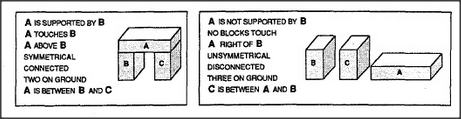

The child in our Block-Arch scene examined several different arrangements of blocks — yet ended up describing them as all the same! The great accomplishment was in discovering how to describe all the different instances of arch with the selfsame phrase, a top supported by two standing blocks that do not touch. I'll use the new word uniframe for this — a description constructed to apply to several different things at once. How does a person make a uniframe?
Our child's Block-Arch uniframe was constructed in several steps — and each step used a different learning-scheme! The first step dissects the scene into blocks with specific properties and relationships; some were lying down or standing up, and some were touching or supporting other ones. Next, we required our uniframe to insist that the arch top must be supported by the standing blocks: let's call this enforcement. Then, we required our uniframe to reject structures in which the two standing blocks touch one another;
we could call this prevention: a way to keep from accepting an undesired situation. Finally, we required our uniframe to be neutral about the arch top's shape in order to keep from making distinctions we don't consider relevant. Let's call that tolerance.
How does a person know how to choose which features and relations to enforce, prevent, or tolerate? When we compared the two structures below, we enforced the relation that A is supported by B and C. But think of all the other differences we could have emphasized instead.
Was it wasteful to use only one of these facts when we could have used them all? Should we learn to exploit all the information we can get? No! There are good reasons not to notice too much, for every seemingly essential fact can generate a universe of useless, accidental, and even misleading facts.
Most differences are redundant. Most of the rest are accidents.
For example, suppose that we already know A is supported by B. There is then no need to remember that A touches B or that A is above B — because these are things that we can figure out. For a different kind of example, suppose we knew that A was not supported by B. It then seems unnecessary to remember that A was to the right of B. Common sense can tell us that if A is not on B, it must lie somewhere else. However, at least in the present context, it does not matter whether that somewhere else is to the right; another time it might just as likely lie to the left. If we stored such details too recklessly, our minds would get cluttered up with useless facts.
But how can we judge which facts are useful? On what basis can we decide which features are essential and which are merely accidents? Such questions can't be answered as they stand. They make no sense apart from how we want to use their answers. There is no single secret, magic trick to learning; we simply have to learn a large society of different ways to learn!